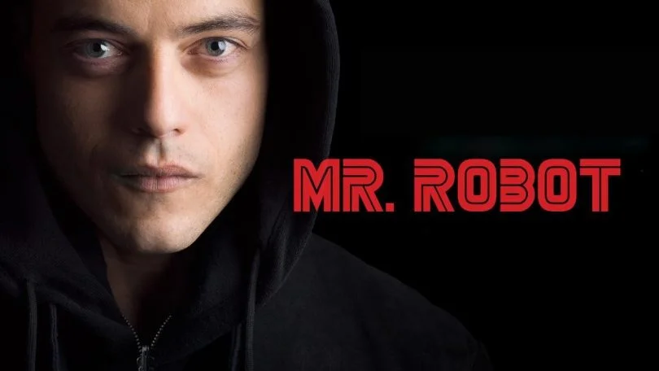

A série de televisão americana Mr. Robot foi criada por Sam Esmail, com transmissão original entre 2015 e 2019, totalizando 4 temporadas. Ela é reconhecida por profissionais de tecnologia da informação como algo que faz sentido ao encenar os hacks e tenologias utilizadas - diferentemente das representações caricatas de hackers. Além disso, faz referências a filmes adorados por esse público, como Matrix, Clube da Luta e até mesmo De Volta Para o Futuro. 
Na série, o engenheiro de cibersegurança e hacker Elliot Alderson (Rami Malek) que sofre de transtorno de ansiedade social e depressão clínica. Ele é recrutado por um anarquista insurrecional conhecido como “Mr. Robot”, interpretado por Christian Slater, para se juntar a um grupo de hacktivistas: a Fsociety. O grupo pretende cancelar todas as dividas atacando o grande glomerado “E Corp”.
Para você que não assistiu a série ainda, ela está disponível no Brasil através da Amazon Prime Video (mesmo terminando em 2019, só na segunda metade de 2021 que liberaram a última temporada por aqui). Depois volte aqui para ver as discussões, porque a partir de agora vem muito spoiler - incluindo dos filmes aos quais a série faz referência!
Para começar, cada temporada termina com um plot twist mais inimaginável que o outro. Vamos acompanhar um resumo de cada uma para relembrar algumas coisas e chamar atenção de outras. Os nomes dos episódios parecem nomes de arquivos, com numeração e terminados com extensões comuns do formato de arquivo - sem falar nas trocas de algumas letras por números, comuns em senhas. Na última temporada, os nomes remetem aos código de resposta HTTP.